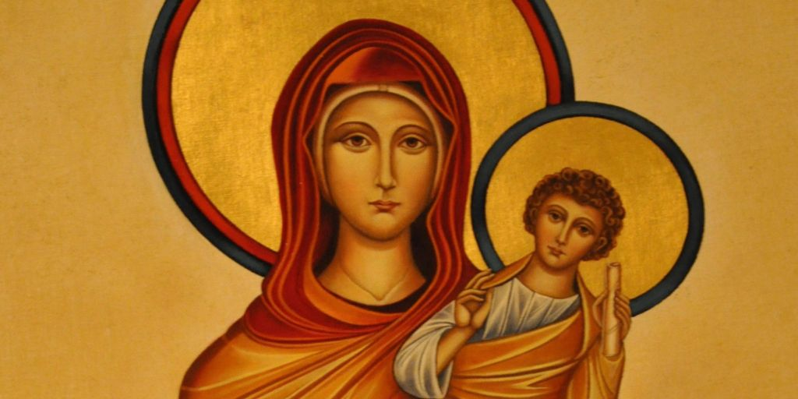

Future top bar with different links and stuff *making own rosary page
Pray the rosary
What it takes for an apparation to be approved
lorem

Officially Recognized Marian Apparations
In order of appearance
Our Lady of Guadalupe
Our Lady of Leżajsk
Our Lady of Šiluva
Our Lady of Laus
Our Lady of the Miraculous Medal
Our Lady of Zion
Our Lady of La Salette
Our Lady of Lourdes
Our Lady, Help of Christians
Our Lady of Hope (Pontmain)
Our Lady of Gietrzwałd
Our Lady of Knock
Our Lady of Fátima
Our Lady of Beauraing
Our Lady of Banneux
Our Lady of Kibeho